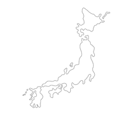

Diplomes
Tsukuba
Diplome Universitaire d'Echange Technique International (DUETI) réalisé au Japon
Université de Tsukuba
Domaine d'étude : Economie et politique internationale
Annecy
Diplome Universitaire Technique (DUT) Gestion des Entrepises et Administration
IUT d'Annecy
Domaine d'étude : Gestion, Comptabilité, Finance, Economie, Marketing, Management
Titre professionnel Developpement Web Web Mobile (DWWM)
AFPA formation à distance
Domaine d'étude : Front End, Back End, Base de Données, Maquettage